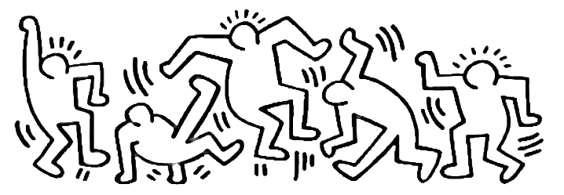
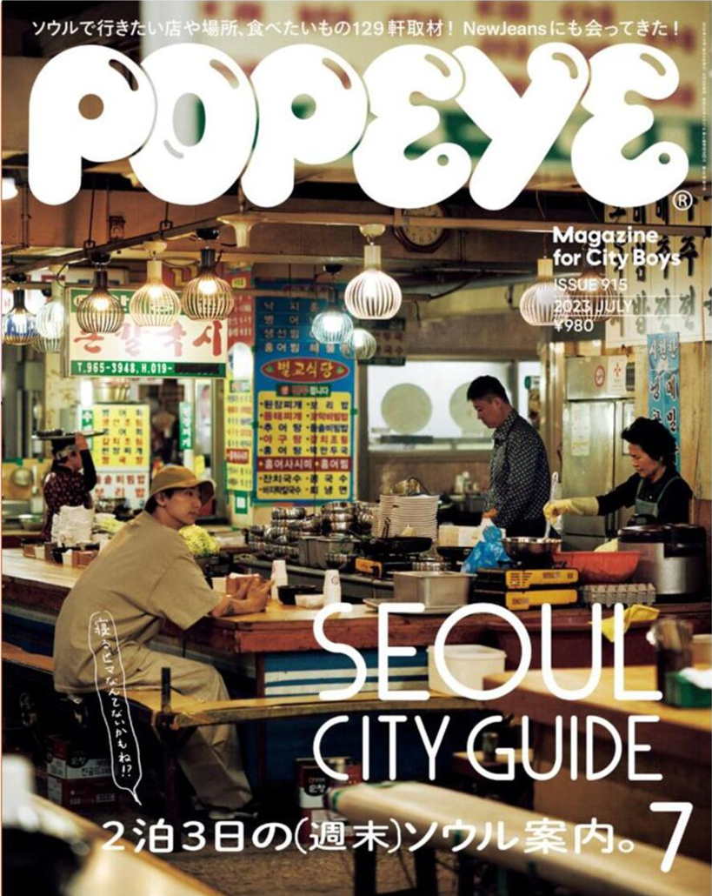

JJY Self-introduction

My Latest Project: Self-branding page 1p
디지털색채디자인 수업의 첫 과제인 셀프 브랜딩 페이지 제작, 타이포그래피 자기소개 a3 작업입니다.
이때부터 나에 대한 '브랜딩'과 '디자인 철학'에 대해 생각할 수 있도록 길을 터준 과제입니다.
나는 어떤 종류의 사람이며, 선호하는 색과 글자는 무엇인지에 대하여 질문하였습니다.
선호하는 디자인과 좋아하는 잡지를 정독할 수 있는 시간이었습니다.



10:00 ~ 12:30 수업1
월요일이면 일반산업안전, 화요일이면 벡터디자인실습기초
목요일이면 디자인리서치씽킹, 금요일이면 디지털색채디자인을 합니다.
12:30~1:30 휴식 및 식사
대부분 과제를 끝내버리려고 열심히 남은 시간을 쓰거나
과제를 이 시간 안에 마무리 하기 힘들다고 느낄 시, 바로 식사를 하고 노래를 듣습니다.
1:40~5:30 수업2, 수업3
월요일이면 생성형AI활용과 타이포그래피, 화요일이면 웹디자인실습기초
목요일이면 이미지그래픽실습, 금요일이면 직업과 경력개발, 영어를 합니다.
15:30~ 기숙사 or 자유
남은 과제를 하거나, 그냥 쉽니다.
이 시간쯤되면 뇌가 활동을 자체적으로 중단합니다.